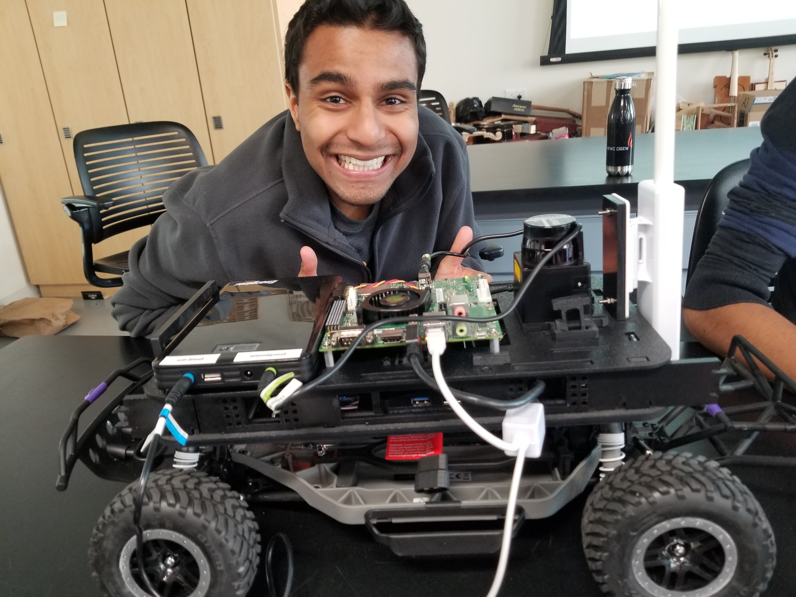
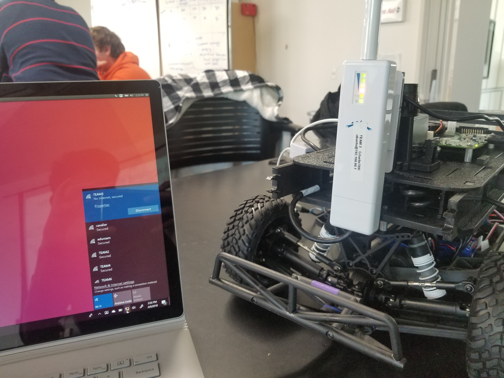

It took a few class periods, but we finally finished putting together our hardware. We began by unpacking our beautiful remote control car, and after playing with it to our heart's content, we start hacking on it. We first removed the connections from a remote control car and adding our own wires to control steering and acceleration. The wires connected a teensy microcontroller with the servo on board. This piece was assembled on the bottom layer of a laser cut chassi that we fastened together. We also put a lithium ion battery on the bottom tier of the chassi.
On the top tier, we put lidar, a jetson, a wifi antenna and USB hub on our vehicle, all powered by a large energizer battery. Below is a photo of the car (with Arman) after we'd finished assmebling all the pieces. All in all, the car got pretty heavy with all the hardware we fixed on it. We're also having some binding problems for now; the car will not respond to the remote control's commands.
After some connectivity problems we finally were able to SSH into the jetson. Below is an image of us connecting to it! Our next step is to learn how to use ROS to make the car responsive to keyboard inputs.
